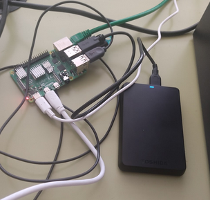
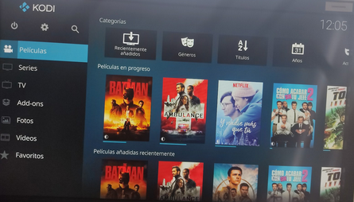

Descargamos nuestras peliculas en el ordenador y las pasamo a un disco duro/usb. Despues conectamos el disco duro/USB en la raspberry

Escaneamos 1 a 1 las peliculas del disco duro y nos apareceran en el apartado de peliculas del menu principal
Dentro del apartado peliculas hacemos clic en la pelicula que queramos ver y se iniciara la peli